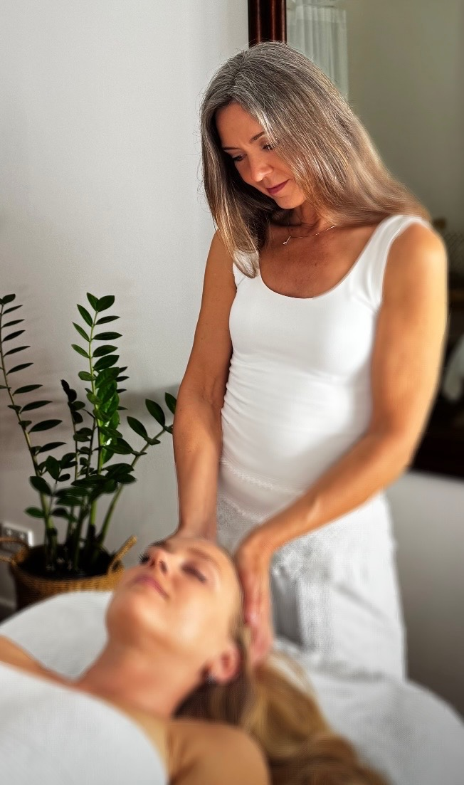
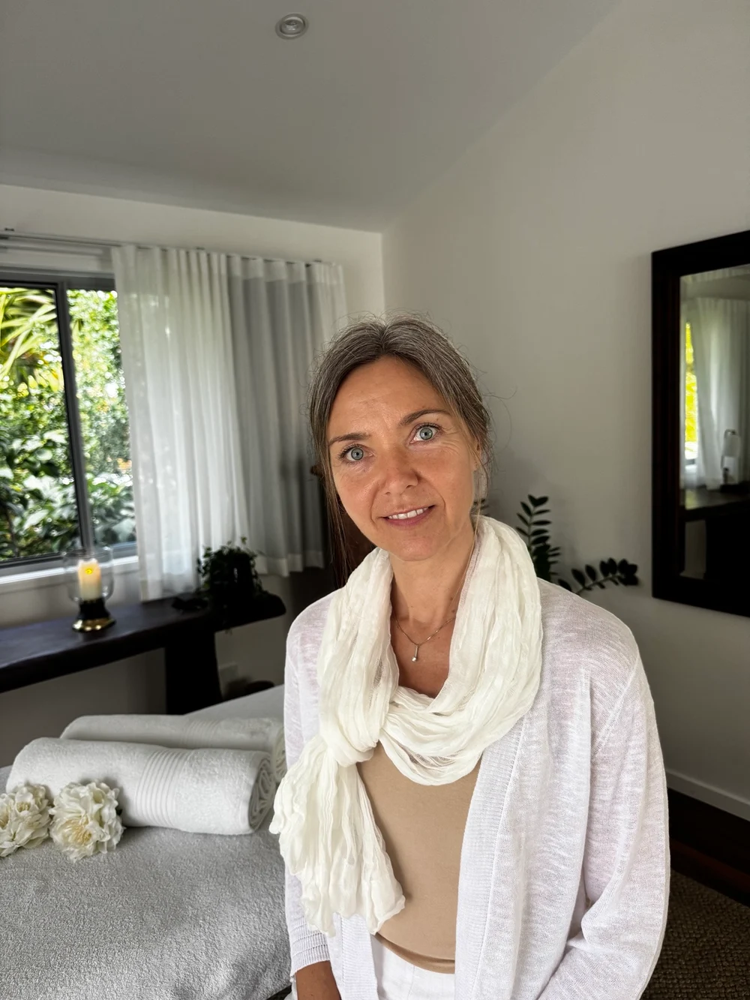

Oncology massage · Gentle, adapted care
A space to breathe and be cared for
Gentle touch therapy
Oncology massage is a gentle, specialised therapy for people living with cancer or who have a history of cancer. Sessions are adapted to your needs during treatment, recovery and beyond.
Understanding oncology massage

Care that meets you
where you are
Oncology Massage is gentle, specialized therapy adapted safely for anyone with a cancer diagnoses or history. It modifies pressure, positioning, and techniques to support your body through treatment, recovery, and beyond.
Benefits:
- Reduces Pain: Calms sore muscles and nerves.
- Lowers Anxiety: Soothes the nervous system deeply.
- Eases Fatique: Restores energy without draining you.
- Relieves Nausea: Promotes comfort during tough treatments.
- Improves Sleep: Helps your body rest and heal.
It's also possible to have a fully clothed Bone Marrow Production Support Sequence where a light systematic touch is designed to improve and support bone marrow production and stimulate the immune system through the principles of deep relaxation.
I’ll ask about your health and any treatment you’re having. Then I’ll adapt the massage to your comfort and needs on the day. We’ll use gentle touch and go at your pace.
People may consider oncology massage after a diagnosis, during treatment or recovery, while living beyond cancer, or as part of palliative care. Your cancer care team can help you decide if it’s suitable for you.
What to expect
A session shaped
around you
There is no one-size-fits-all session.
Time to listen
Please allow extra time for your first appointment. We’ll fill in a client intake form together and talk through your cancer history, current treatments, medicines and any concerns. This helps me adapt the massage to your needs.
Thoughtfully adapted
I’ll adapt the pressure, positioning, techniques and session length to how you’re feeling. I’ll take recent surgery, ports and medicines into account when choosing where to work. Pillows or a chair can help you get comfortable.
Fully clothed option. If you prefer to stay fully clothed, I can offer a gentle sequence of light touch for relaxation.
At your pace
You can ask me to adjust the positioning, take a break or stop the massage at any time.

Meet your
therapist
Hi, I’m Maria - founder and therapist at Sacred Layers.
With more than 10 years of experience in the wellness industry, I offer restorative massage and holistic bodywork designed to support deep relaxation, healing, and reconnection.
My approach combines therapeutic touch, intuitive care, and a calming presence to create treatments that nurture my clients as a whole.
With more than 10 years of experience in the wellness industry, including a Diploma in Remedial Massage, I bring both professional knowledge and heartfelt presence into my work. My background has been primarily within spa and holistic wellness settings, where I developed a deeply nurturing and restorative approach to bodywork.
I’m a certified oncology massage therapist and have completed both Oncology Massage Foundation training (OM1) and Oncology Massage Therapist training (OM2). This specialised training helps me support people navigating cancer and other significant health challenges with greater sensitivity, care and understanding.
I am an accredited member of Massage & Myotherapy Australia.
I’m based at Revival Health Labs in Noosaville on the Sunshine Coast. I also offer home visits for oncology massage on the Sunshine Coast.
I look forward to welcoming you.
Read more about me at Sacred LayersSession pricing
- Oncology massage 60 min - $158
- Deep rest therapy 60 min - $138
Health fund rebates are available for oncology massage appointments at Revival Health Labs, depending on your fund and level of cover.
Home
visits
Home visits are available by arrangement. Please get in touch with your suburb so I can confirm availability and the travel fee before you book.
Contact
Maria
If you have a question or would like to enquire about a session, please send me a text or an email.